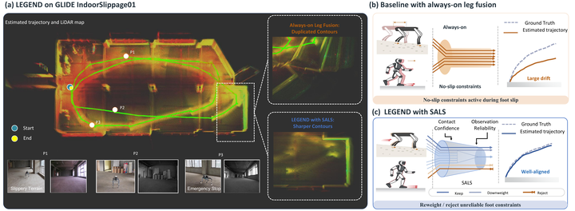
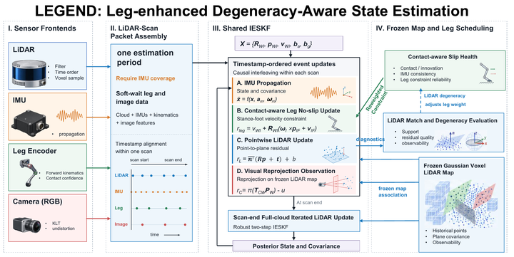
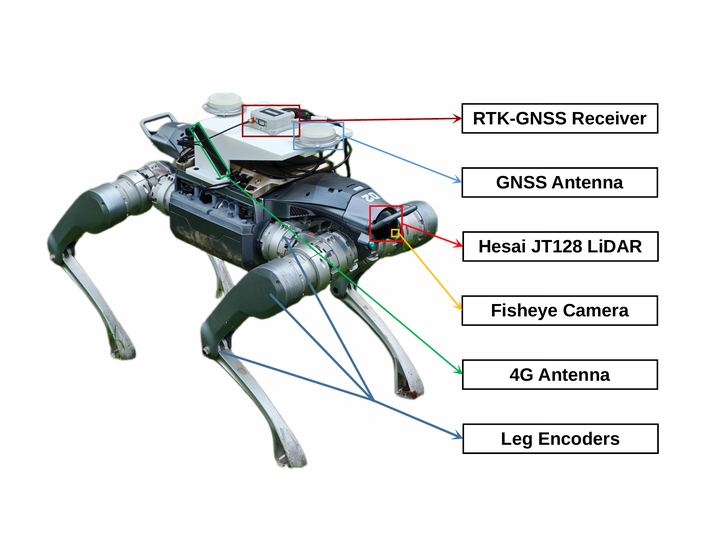
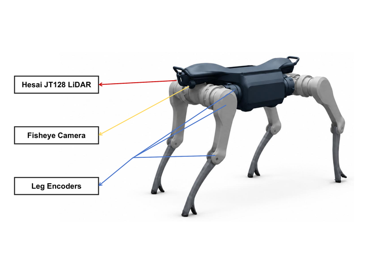
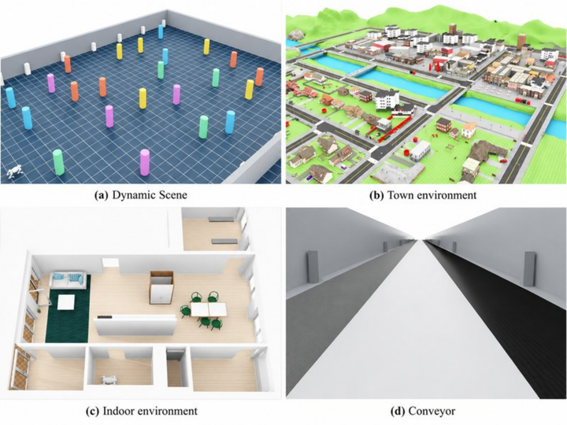

LEGEND : Leg-enhanced Degeneracy-aware State Estimation in Challenging Scenarios for Legged Robots
Anonymous Affiliation(s)
We will release codes and datasets upon paper acceptance!
Degeneracy-Aware Fusion for Legged Odometry.
IESKF frontend with LiDAR/visual degeneracy detection and Slip-Aware Leg Scheduling (SALS) for quadrupeds and bipeds.

LEGEND results. (a) Estimated trajectory and LiDAR map on IndoorSlippage01. (b) Fixed-weight leg fusion drifts during foot slip, while SALS reweights unreliable leg constraints. (c) Unscheduled leg fusion duplicates map contours; LEGEND preserves sharper geometry under slip.
TL;DR
Reliable state estimation for legged robots must survive foot slip and soft terrain that coincide with LiDAR geometric degeneracy and visual observability loss. Existing systems often apply kinematic constraints whenever contact is detected, while handling LiDAR and visual degeneracy separately.
LEGEND is a tightly-coupled legged odometry framework that integrates LiDAR/visual degeneracy detection with Slip-Aware Leg Scheduling (SALS) in a single IESKF frontend, so LiDAR, visual, and leg residuals are activated, reweighted, or rejected according to local observability and contact reliability. We also release GLIDE, a real-robot benchmark covering slip, soft terrain, and sensor degeneracy.
- LEGEND: filter–optimizer legged LVIO that fuses no-slip constraints at LiDAR rate, with online degeneracy handling and SALS on quadruped and biped platforms.
- GLIDE: Ground Legged Integrated Degeneration Evaluation benchmark with synchronized LiDAR, camera, IMU, and leg proprioception under grass, slip, and multi-sensor degeneracy.
- Evaluation: GrandTour (Q1), GLIDE (Q2), and KILVO/LIKO (Q3), compared against LIO/LVIO baselines, kinematic-inertial odometry, and SALS ablations.
Method
LEGEND uses a filter–optimizer architecture. The IESKF frontend fuses IMU, LiDAR, vision, and per-foot no-slip velocity observations at LiDAR rate. Leg constraints are handled entirely in the frontend so slip can be detected and rejected before exteroceptive updates corrupt the state. A short sliding-window backend then refines IMU preintegration and fixed LiDAR geometric factors only.
System pipeline

For each LiDAR scan: IMU propagation → proprioceptive leg updates on the propagated state → LiDAR point-to-plane iteration → optional LiDAR-gated visual residuals → backend refinement without reintroducing leg factors.
Core modules
Platform-agnostic proprioception
A shared four-foot measurement buffer with support-topology flags covers quadrupeds and bipeds. Contact gates hard-enable leg factors; continuous confidence modulates soft weights.
No-slip leg factor
Stance feet contribute 3D zero-velocity observations in the world frame. Feet with low SALS reliability weights are skipped, reducing the estimator to LIO/LVIO without changing the state.
LiDAR / visual degeneracy
Scan-level match counts and pose-information condition numbers diagnose LiDAR weakness. Visual updates are enabled when LiDAR geometry is weak and gated when it is already well conditioned.
Slip-Aware Leg Scheduling (SALS)
Per-foot slip score, IMU consistency, multi-foot consensus, and geometry weights decide whether to up-weight, down-weight, or reject no-slip factors—especially under soft terrain and multi-foot slip.
Dataset
GLIDE — Ground Legged Integrated Degeneration Evaluation
GLIDE (Ground Legged Integrated Degeneration Evaluation) studies legged SLAM under slip, soft terrain, LiDAR geometric degeneracy, and visual observability loss. It currently includes 32 real-robot sequences and 10 simulation sequences with synchronized LiDAR, camera, IMU, and leg proprioception. Outdoor routes provide RTK references; indoor routes provide ArUco endpoint references; simulation routes provide ground-truth pose.
Real-robot collection with LiDAR–IMU–camera and low-level joint/torque proprioception.
Hesai JT128 LiDAR, body/LiDAR IMU, RGB camera, RTK, and ~1 kHz proprioception.
Indoor, corridor, slippage, grassland, slope, stairs, wet/challenging roads, parking lots, and Isaac Sim failure cases.
Challenging scenarios
Representative real-robot clips from GLIDE, covering geometric degeneracy, low-light aggressive motion, soft-terrain climbing, and contact slip under external disturbance.
GLIDE · Corridor. Long corridor with repetitive planar structure and weak lateral constraints, stressing LiDAR geometric observability.
GLIDE · Emergency stop. Low-light indoor scene with an abrupt halt, coupling visual degradation and aggressive platform dynamics.
GLIDE · Grassland uphill. Soft-terrain ascent on grass, where foot sinkage and slope climb challenge both contact reliability and exteroceptive constraints.
GLIDE · Foot-kick slip. External foot kick induces stance slip while contact remains active, violating the no-slip assumption used by kinematic constraints.
Platform & sensor layout


Representative simulation scenarios

(a) Dynamic obstacle scene, (b) town route, (c) indoor apartment, and (d) conveyor corridor in GLIDE simulation sequences.
Recorded streams
| Source | Measurement | Rate |
|---|---|---|
| A2 Pro proprioception | Joint/motor state and torque proxy | 1.0 kHz |
| Body IMU | Six-axis inertial data | 1.0 kHz |
| Hesai JT128 | 3-D point cloud | 10 Hz |
| JT128 IMU | Six-axis inertial data | 500 Hz |
| Built-in camera | RGB, 1920×1080 | 10 Hz |
| Dual-antenna RTK | Position and heading | 10 Hz |
| ArUco board | Indoor endpoint pose | Endpoints |
Sequence overview
| Domain | Scene | Sequences | No. | Duration (s) | Size (GiB) | Reference |
|---|---|---|---|---|---|---|
| Real | Indoor | Indoor01–04 | 4 | 474.8 | 18.1 | ArUco |
| Long corridor | Corridor01, CorridorRunning01 | 2 | 506.3 | 19.2 | ArUco | |
| Indoor slippage | IndoorSlippage01–02 | 2 | 271.6 | 10.3 | ArUco | |
| Grassland | Grassland01–02 | 2 | 297.3 | 11.7 | RTK | |
| High grassland | HighGrassland01–02 | 2 | 243.2 | 9.6 | RTK | |
| Slope | Slope01–03 | 3 | 371.3 | 14.4 | RTK | |
| Outdoor open stairs | OutdoorOpenStairs01–04 | 4 | 614.8 | 24.0 | RTK | |
| Challenging road | ChallengingRoad01–04 | 4 | 515.6 | 19.9 | RTK | |
| Parking lot | ParkingLot01–04, ParkingLotRunning01, ParkingLotDark01–02 | 7 | 1964.7 | 74.9 | RTK | |
| External disturbance | ExternalDisturbance01–02 | 2 | 235.2 | 9.0 | RTK | |
| Sim. | External impact | ExternalImpact01 | 1 | 301.1 | 1.6 | Simulator |
| Conveyor-induced failure | ConveyorFailure01 | 1 | 183.9 | 1.0 | Simulator | |
| Trap-induced fall | DropTrap01 | 1 | 136.2 | 0.8 | Simulator | |
| Dynamic scene | DynamicScene01 | 1 | 528.4 | 2.8 | Simulator | |
| Indoor environment | SmallRoom01, SmallKitchen01 | 2 | 426.3 | 3.6 | Simulator | |
| Town environment | SmallTown01–02 | 2 | 3193.7 | 16.9 | Simulator | |
| Maze walking | MazeWalking01 | 1 | 449.5 | 3.4 | Simulator | |
| Conveyor full operation | ConveyorFull01 | 1 | 2115.3 | 13.7 | Simulator | |
| Total | 42 | 12829.2 | 254.9 | — | ||
The dataset will be released with calibration files, sequence metadata, and evaluation scripts upon paper acceptance.
GrandTour
Q1 · Overall Benchmarking on public quadruped LVIO sequences
LEGEND achieves the lowest RTE on three of the four reported sequences and ranks second on the debris-rich Arc-2 route, showing that reliability-aware leg fusion improves rather than trades away nominal LVIO accuracy.
LEGEND on GrandTour
GrandTour · SNOW-2. Fast walking on fully snow-covered terrain, with limited planar structures and small-scale loop closures. LEGEND: 0.69 cm RTE (Rank 1st). Top-3: Ours 0.69 | HR²-KILO 0.98 | FAST-LIVO2 1.25.
GrandTour · EIG-1. Hill-to-station descent with long walking and mixed planar/non-planar structures. LEGEND: 0.95 cm RTE (Rank 1st). Top-3: Ours 0.95 | FAST-LIVO2 1.11 | DLIO 1.26.
GrandTour · ARC-2. Narrow passages in a rescue training center, with limited visibility and featureless walls challenging both vision and LiDAR. LEGEND: 0.97 cm RTE (Rank 2nd). Top-3: FAST-LIVO2 0.70 | Ours 0.97 | DLIO 1.19.
GrandTour · SPX-2. Jungfraujoch research-station sequence with dynamic initialization, thin structures, moving objects, and loop closure. LEGEND: 1.00 cm RTE (Rank 1st). Top-3: Ours 1.00 | Faster-LIO 1.02 | Voxel-SLAM 1.03.
| Method | Spectacular-2 | Snowy-2 | Eigen-1 | Arc-2 |
|---|---|---|---|---|
| FAST-LIO2 | 1.07 | 1.41 | 1.28 | 3.62 |
| FAST-LIVO2 | 1.05 | 1.25 | 1.11 | 0.70 |
| Point-LIO | 2.20 | 8.47 | 6.01 | 10.94 |
| DLIO | 1.22 | 1.51 | 1.26 | 1.19 |
| Voxel-SLAM | 1.03 | 1.37 | 1.34 | 1.24 |
| Faster-LIO | 1.02 | 1.46 | 1.30 | 2.01 |
| Super Odometry | 3.90 | 1.53 | 1.47 | 2.82 |
| Leg-KILO | 3.09 | 4.12 | 3.26 | 5.80 |
| LIKO† | 936.71 | 98.01 | 84.93 | 690.66 |
| HR²-KILO | 1.68 | 0.98 | 1.32 | 5.23 |
| LEGEND | 1.00 | 0.69 | 0.95 | 0.97 |
RTE (cm, ↓) on representative GrandTour sequences. †LIKO uses its default humanoid configuration on ANYmal quadruped sequences.
GLIDE
Q2 · Robustness under degradation and foot slip
This study on the GLIDE dataset isolates coupled exteroceptive degeneracy and proprioceptive slip. Methods accurate in structured indoor scenes can drift substantially under slip, geometric degeneracy, or aggressive motion. Full LEGEND attains the best or tied-best result on five of the eight reported sequences; SALS drives gains on slip- and degradation-focused routes, while exteroceptive gating preserves tied-best indoor accuracy.
LEGEND on GLIDE
KICK · Sidewalk. Outdoor sidewalk traversal with narrow passages, vegetation boundaries, and pedestrian disturbance.
SLIP · Indoor Loop. Indoor loop sequence with doorway transitions, low-texture walls, and repeated observations.
PARKINGLOT · Urban Lane. Outdoor parking-lane traversal with parked vehicles, road markings, and dynamic roadside clutter.
SANDSTONE · Rough Terrain. Uneven gravel-terrain sequence with loose ground, rocks, vegetation, and strong body oscillations.
| Method | Indoor03 | Slippage01 | OpenStairs04 | ChallengingRoad03 | Slope02 | ChallengingRoad04 | ParkingLot01 | CorridorRunning01 |
|---|---|---|---|---|---|---|---|---|
| Faster-LIO | 0.48 | 0.11 | 0.23 | 0.32 | 0.30 | 0.41 | 0.81 | — |
| CT-LIO | 0.05 | 0.04 | 0.21 | 0.31 | 0.32 | 0.38 | 0.59 | 8.29 |
| LIKO | 0.08 | 0.31 | 0.31 | 1.57 | 0.33 | 0.46 | — | — |
| Leg-KILO | 50.14 | 6.21 | 0.21 | 5.23 | 3.75 | 12.92 | 41.65 | 17.92 |
| LEGEND (w/o SALS) | 0.05 | 0.18 | 0.21 | 0.29 | 0.49 | 0.49 | 1.01 | 4.90 |
| LEGEND (w/ SALS) | 0.05 | 0.03 | 0.21 | 0.28 | 0.31 | 0.33 | 0.51 | 3.74 |
Translational error (m, ↓) on representative GLIDE sequences. Runs with error above 100 m are marked as failed (—). Full table in the paper.
LIKO
Q3 · Cross-platform validation on biped locomotion
On the five LIKO sequences, LEGEND (KIL) achieves the lowest translational APE RMSE for each gait and the lowest mean error, indicating that the shared proprioceptive interface and biped support policy handle distinct contact phases without changing the state formulation.
LIKO · Square Walk. Humanoid locomotion along a square trajectory, with repeated heading changes and gait-induced oscillations challenging motion compensation and scan-to-map registration. LEGEND (KIL): 0.77 cm ATE RMSE. Comparison (cm): LEGEND (KIL) 0.77 | KILVO(KIL) 1.00 | LIO-SAM 1.22.
LIKO · Up Slope. Humanoid locomotion on an inclined surface, with body pitch variations and rolling foot contact challenging leg-kinematic constraints and consistent state estimation. LEGEND (KIL): 1.41 cm ATE RMSE. Comparison (cm): LEGEND (KIL) 1.41 | KILVO(KIL) 2.04 | LIKO 2.45.
| Method | Forward-backward | Square walk | Square walk long | Walk in place | Up slope | Mean |
|---|---|---|---|---|---|---|
| LIKO | 0.91 | 1.98 | 1.80 | 2.15 | 2.45 | 1.86 |
| KILVO(KIL) | 0.80 | 1.00 | 1.39 | 2.34 | 2.04 | 1.51 |
| LIO-SAM | 1.36 | 1.22 | 2.20 | 1.02 | 75.44 | 16.25 |
| LEGEND (KIL) | 0.71 | 0.77 | 1.36 | 0.59 | 1.41 | 0.97 |
Translational APE RMSE (cm, ↓) on the LIKO dataset.
KILVO
Q3 · Cross-platform validation on the Unitree G1 humanoid benchmark
LEGEND (KILV) obtains the lowest mean start-to-end error on the full KILVO benchmark collected on the Unitree G1 humanoid platform and remains stable across both camera configurations and diverse motion and environmental conditions, including challenging running and robustness sequences where several LVIO baselines diverge.
KILVO · Outdoor H1. Outdoor humanoid locomotion with gait-induced platform oscillations, challenging LiDAR motion compensation and scan-to-map registration. LEGEND (KILV): 0.63 cm ESTE. Comparison (cm): LEGEND (KILV) 0.63 | KILVO(KILV) 1.25 | Faster-LIO 1.59.
KILVO · Robustness B2. Dense, correlated LiDAR measurements and unstable data associations challenge continuous-time state estimation. LEGEND (KILV) maintains stable odometry without divergence: 0.31 cm ESTE. Comparison (cm): LEGEND (KILV) 0.31 | KILVO(KILV) 0.93 | FAST-LIVO2 63.61.
| Method | Corridor R | Corridor H | Spin R | Spin H | Outdoor R1 | Outdoor R2 | Outdoor R3 | Outdoor H1 | Outdoor H3 | Outdoor H4 | Running RH1 | Running RH2 | Robustness BH1 | Robustness BH2 | Avg. |
|---|---|---|---|---|---|---|---|---|---|---|---|---|---|---|---|
| LIKO | 0.37 | 8.18 | 1.63 | 2.03 | 1.51 | 4.66 | 1.91 | 3.28 | 4.24 | 1.61 | 4.02 | 4.57 | 199.27 | 99.39 | 24.05 |
| KILVO(KIL) | 0.18 | 0.15 | 1.44 | 1.69 | 1.03 | 0.60 | 1.41 | 2.42 | 1.80 | 0.15 | 2.24 | 3.79 | 2.35 | 1.10 | 1.45 |
| FAST-LIO2 | 0.76 | 8.81 | 0.40 | 2.24 | 2.06 | 3.11 | 1.47 | 2.73 | 7.08 | 1.02 | 1.97 | 5.03 | 145.20 | 120.03 | 21.56 |
| Faster-LIO | 0.39 | 0.31 | 0.83 | 2.13 | 1.19 | 0.66 | 0.21 | 1.59 | 1.80 | 0.25 | 3.83 | 5.42 | 426.48 | 510.65 | 68.27 |
| R3LIVE | 3.90 | 37.15 | 3.09 | 4.50 | 1.05 | 2.82 | 3.51 | 3.68 | 9.63 | 0.83 | 10.65 | 12.98 | 2986.51 | 3796.32 | 491.19 |
| FAST-LIVO2 | 0.28 | 0.10 | 0.93 | 1.93 | 2.34 | 1352.78 | 0.13 | 2.28 | 1.51 | 0.91 | 3.38 | 4.76 | 188.31 | 63.61 | 115.95 |
| KILVO(KILV) | 0.31 | 0.05 | 0.30 | 1.60 | 1.03 | 0.05 | 0.57 | 1.25 | 1.20 | 0.54 | 2.23 | 3.73 | 1.30 | 0.93 | 1.08 |
| LEGEND (KILV) | 0.29 | 0.13 | 0.24 | 1.13 | 0.08 | 0.04 | 0.33 | 0.63 | 0.96 | 0.15 | 0.04 | 0.29 | 2.11 | 0.31 | 0.48 |
Localization accuracy on the KILVO dataset in ESTE (cm, ↓). R/H: RealSense/Hikvision camera; Ri/Hi: outdoor route i; RHi/BHi: humanoid running/robustness sequences.
BibTeX
@inproceedings{legend2026,
author = {Anonymous Author},
title = {{LEGEND}: Leg-enhanced Degeneracy-aware State Estimation in Challenging Scenarios for Legged Robots},
booktitle = {Under review},
year = {2026},
}Code and the GLIDE dataset will be released upon paper acceptance.